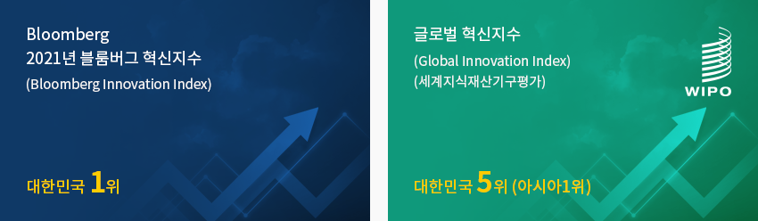
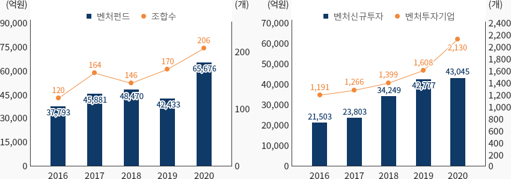
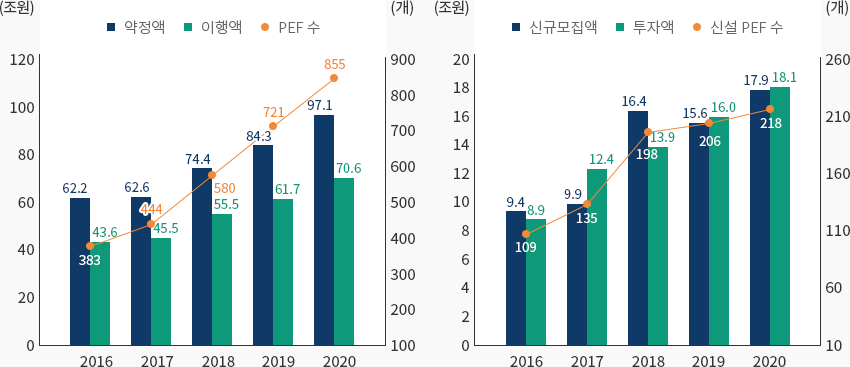
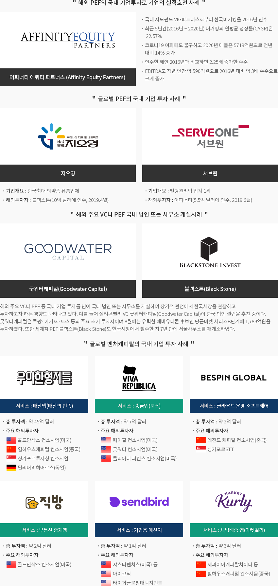

금융
- Home
- Why KOREA
- 산업
- 금융
금융
Financial Service
-
한국의 혁신생태계 매력적 투자처로 부상 내용닫기한국의 혁신생태계 매력적 투자처로 부상벤처캐피탈의 조성과 투자는 근래 수년 연속 최고치를 경신하고 있으며 2020년 코로나19 위기 과정에서도
벤처투자는 매우 활발하게 이루어지고 있는 상황이다. 적절한 투자수익을 창출하고자 하는 민간의 노력과 벤처기업을
한국경제의 성장과 일자리 창출의 동력으로 삼고자 하는 정부의 의지가 맞물리면서 한국의 벤처생태계는
지속적으로 성장하면서 성숙해지고 있다.특히 2021년 블룸버그 혁신지수(Bloomberg Innovation Index) 한국 1위, 글로벌 혁신지수(Global Innovation Index,
세계지식재산기구(WIPO) 평가) 한국 5위(아시아 1위)를 기록하는 등 각종 혁신평가에서 수년 째 한국은 최상위권을 차지하는 등
혁신생태계가 잘 조성되어 있어 투자처로서 아주 매력적인 곳이라 할 수 있다.- Bloomberg 2021년 블룸버그 혁신지수(Bloomberg Innovation Index) - 대한민국 1위
- 글로벌 혁신지수(Global Innovation Index)(세계지식재산기구평가) - 대한민국 5위(아시아1위)
 경영참여형 PEF(Buyout PEF)도 최근 PEF 설립 수, 투자액 모두 최고치를 경신하면서 꾸준히 성장하고 있으며 기업가치 제고 후 상장,
경영참여형 PEF(Buyout PEF)도 최근 PEF 설립 수, 투자액 모두 최고치를 경신하면서 꾸준히 성장하고 있으며 기업가치 제고 후 상장,
동종기업 간 합병 후 매각 등 PEF가 기업 인수합병 분야에서 주요 플레이어로 그 영향력을 강화하고 있다.벤처기업과 벤처캐피탈 육성에 대한 정부의 정책적 지원이 계속 나오고 있으며 PEF에 대한 규제완화도 이루어지는 등
제도적 개선도 지속적으로 이루어지고 있다.2021년 8월 정부는 ‘글로벌 4대 벤처강국 도약’을 정책 발표하였고 2021년 10월부터는 PEF 제도개편이 이루어져 PEF의 자산운용에
있어 규제가 완화되는 등 벤처캐피탈 및 PEF 투자환경은 지속적으로 개선되고 있는 상황이다. -
벤처캐피탈 조성과 벤처투자, 지속적으로 최고치를 경신 내용열기벤처캐피탈 조성과 벤처투자, 지속적으로 최고치를 경신2020년 코로나19의 위기상황에서도 벤처펀드의 결성과 벤처캐피탈 투자는 지속적으로 상승하여 역대 최고치를 경신하였다.
2020년 벤처펀드 결성실적은 전년 2019년 대비 약 54.8% 늘어난 6조 5,676억원, 그리고 신규결성 조합 수는
역대 최다인 206개를 기록하였다. 2020년 벤처펀드 결성실적은 이전 최대 실적인 2018년 4조 8,470억원을 경신한
기록임과 동시에 최초로 6조원 대를 돌파한 기록이였다.2020년 벤처기업에 대한 투자는 전년도보다 증가율은 하락하였지만 다시 역대 최고치를 경신한 4조 3,045억원을 기록하였다.
2020년 벤처투자는 전년 대비 0.6% 증가하여 2019년 증가율 24.9%에 비해 증가속도는 둔화되었지만 투자 건수(4,231건)와
피투자기업 수(2,130개사) 역시 각각 최초 4천 여건, 2천 여개사를 넘어서면서 모두 역대 최다를 기록하였다.벤처펀드 결성실적 표로 구분, 년도별 정보 제공 구분 2016 2017 2018 2019 2020 벤처펀드 37,793 45,881 48,470 42,433 65,676 조합수 120 164 146 170 206 벤처기업에 대한 표로 구분, 년도별 정보 제공 구분 2016 2017 2018 2019 2020 벤처신규투자 21,503 23,803 34,249 42,777 43,045 벤처투자기업 1,191 1,266 1,399 1,608 2,130
※ 자료 : 중소벤처기업부벤처투자 업종별로 보면 코로나19 위기로 부각됐던 바이오·의료, 정보통신기술(ICT)분야, 소재·부품·장비 관련 업종
(전기·기계·장비, 화학·소재, ICT제조) 등 6개 업종이 2020년 벤처투자 증가를 견인하였다. 반면 코로나19 여파로
관련 산업이 전반적으로 피해를 입은 유통·서비스, 영상·공연·음반 업종은 2019년 대비 투자가 감소하였다."업종별 벤처투자 2019년과 2020년 비교"(단위: 억원, %)업종별 벤처투자 2019년과 2020년 비교 표로 증가 업종, 감소 업종, 증가율(%), 년도별 정보제공 증가 업종 ‘19년 ‘20년 증가율(%) 감소 업종 ‘19년 ‘20년 증가율(%) 바이오·의료 11,033 11,970 8.5 유통·서비스 8,145 7,242 -11.1 전기·기계·장비 2,036 2,738 34.5 화학·소재 1,211 1,765 45.7 영상·공연·음반 3,703 2,902 -21.6 ICT제조 1,493 1,869 25.2 ICT서비스 10,446 10,764 3.0 기타 3,518 2,546 -27.6 게임 1,192 1,249 4.8 ※ 자료: 중소벤처기업부(단위 : 십억 달러, 개)창업투자회사(투자조합) 현황 및 투자실적 표로 구분, 년도(2010 ~ 2018년) 정보제공 구분 창업투자회사 투자 조합 조합수 결성금액 투자 신규투자금액 업체수 ※ 출처 : 한국벤처캐피탈 협회
※ 주 : 투자조합은 창업투자조합과 한국벤처투자조합을 포함합니다.
※ 주 : 조합은 연도별 신규 결성조합 대상으로 산출하며, 산출시점에 따라 달라질 수 있습니다. -
경영참여형 PEF의 설립과 투자의 지속적 성장 내용열기경영참여형 PEF의 설립과 투자의 지속적 성장한편 2020년 말 기준 경영참여형 PEF(사모집합투자기구)는 총 855개로 전년 대비 134개 증가하였다. 투자자가 PEF에 출자를
약정한 금액(약정액)은 97.1조원으로 전년 84.3조원 대비 15.2% 증가하였고 투자자가 PEF에 출자를 이행한 금액(이행액)은
70.6조원으로 전년 61.7조원 대비 12.6% 증가하였다.2020년 중 신설 PEF 수는 총 218개로 전년(206개) 대비 12개 증가하였고 2020년중 PEF 신규 자금모집액(신설 PEF의 약정액)은
17.9조원으로 전년(15.6조원) 대비 2.3조원 증가하였다. 2020년 중 PEF 투자집행 규모는 18.1조원으로 전년(16조원) 대비 2.1조원
증가하였다.2020년 중 국내 외 565개사에 대한 PEF 투자가 이루어졌는데 이 중 국내 기업이 488개사(비중 86.4%)로 국내기업 투자 편중도가
상당히 높은 수준이다. 투자금액 기준으로는 국내 12.6조원, 해외 5.5조원 투자를 기록하였다."PEF 수와 약정액·이행액 추이 및 신설 PEF와 모집액·투자액 추이"PEF 수와 약정액·이행액 추이 표로 구분, 년도별 정보 제공 구분 2016 2017 2018 2019 2020 약정액 62.2 62.6 74.4 84.3 97.1 이행액 43.6 45.5 55.4 61.7 70.6 PEF 수 383 444 580 721 855 신설 PEF와 모집액·투자액 추이 표로 구분, 년도별 정보 제공 구분 2016 2017 2018 2019 2020 신규모집액 9.4 9.9 16.4 15.6 17.9 투자액 8.9 12.4 13.9 16.0 18.1 신설 PEF 수 109 135 198 206 218
※ 자료 : 금융감독원 -
4차 산업혁명 시대 도래와 시장친화적 기업구조조정 필요성 증대 내용열기4차 산업혁명 시대 도래와 시장친화적 기업구조조정 필요성 증대한국 벤처캐피탈 규모는 최근 수년 연속 최고치를 경신하면서 제2의 벤처호황기라 불릴 만큼 매우 활발하게
이루어지고 있다. 특별히 4차 산업혁명 관련 신산업들의 부상으로 산업구조가 재편되는 구조적 변화는 새로운 기회를
제공하고 있으며, 4차 산업혁명 관련 벤처기업을 향후 한국경제의 주력기업으로 육성하고자 하는 정책적 의지도 강한 상황이다.경영참여형 PEF(Buyout PEF)도 꾸준한 성장세를 보이고 있으며 향후 경기침체가
장기화될 경우 오히려 PEF에게는 투자기회도 많아질 것으로 예상된다.
특히 과거에 비해 한국기업들이 구조조정을 선제적으로 추진하는 경향이 강해졌기 때문에
경기침체기에 우량매물이 증가하고 이에 따라 PEF의 투자 수익성도 많이 개선될 전망이다.
-
해외 벤처캐피탈(VC)의 군내 벤처기업에 대한 투자 활성화 내용열기해외 벤처캐피탈(VC)의 군내 벤처기업에 대한 투자 활성화최근 글로벌 벤처투자기관(PEF, VC, Accelerator)의 한국기업 투자는 상당히 활발히 이루어지고 있으며
향후 성공사례가 축적될수록 벤처생태계는 더욱 성숙해지고 시장의 역동성도 더욱 제고되는 효과를 낳을 것으로 기대된다.
최근 벤처기업의 글로벌 벤처펀드 투자유치 주요 사례를 살펴보면 다음과 같다.글로벌 벤처펀드 투자유치 주요 사례 표로 기업명, 주요 사례 정보제공 기업명 주요 사례 
의료 AI 전문 데이터 라벨링 기업 인그래디언트(Ingradient)은 2021년 7월에 이스라엘 최초의 VC인 요즈마그룹(Yozma Group) 비전크리에이터 14억원의 프리 시리즈A를 유치하였다. 투자기관은 인그래디언트가 개발한 의료 AI 데이터 라벨링 솔루션 메디라벨(MediLabel)의 기술력과 미래 비전을 높이 평가하였다. 
국내 최대 여행·여가 플랫폼 기업 야놀자는 2021년 7월에 세계 최대 벤처 투자펀드인 비 전펀드 (SoftBank's Vision Fund)로부터 17억 달러(약 1조9400억원)원를 유치하였다. 야놀자는 클라우드 기반의 객실 예약 관리 시스템 분야를 키우며 단순 숙박 예약 업체가 아닌 IT 서비스 기업으로 수익 구조를 다각화하고 있다. 
이용자 참여형 스토리 콘텐츠 플랫폼을 개발하는 스타트업인 테일버스는 2021년 10월에 싱가포르 VC인 가레나 벤처스(Garena Ventures)에서 200만달러(약 23억원) 규모의 시드(seed) 투자를 유치하였다. 테일버스는 기존의 웹소설, 웹툰의 단점을 극복하여 화려한 비주얼과 동적인 모션을 갖추고 있으면서, 애니메이션보다 훨씬 낮은 제작비로 누구나 쉽게 만들 수 있는 스토리 콘텐츠 플랫폼의 개발을 진행 중이다. 
AI 기업 마크비전(Marq Vision)은 2021년 4월에 세계 최대 스타트업 엑셀러레이터인 와이콤비네이터 (Y Combinator)를 비롯해 국내 투자기관 베이스 인베스트먼트, 다날 투자 파트너스로부터 36억원 투자를 유치하였다. 마크비전은 아마존, 쿠팡, 알리바바, 타오바오 등 23개국 60여개에 달하는 e-commerce 사이트 및 각종 SNS 채널에서 유통되는 가품을 적발하고 삭제 신고까지 자동화해주는 AI 위조상품 모니터링 서비스를 제공하고 있다. 
로봇 스타트업 베어로보틱스(Bear Robotics)는 2020년 1월에 소프트뱅크의 주도로 국내의 롯데액셀러레이터, 스마일게이트, DSC인베스트먼트 등으로부터 로봇 스타트업계 최고 수준인 시리즈A 투자 3200만 달러(약 371억원)를 유치하였다. 베어로보틱스는 자율주행 기반 로봇 서비(Servi)를 개발해 외식업 시장의 서비스 혁신을 주도하고 있다. 해외 PEF의 국내 기업투자로 기업의 실적호전 사례 어피너티 에쿼티 파트너스 (Affinity Equity Partners)- 국내 사모펀드 VIG파트너스로부터 한국버거킹을 2016년 인수
- 최근 5년간(2016년 ~ 2020년) 버거킹의 연평균 성장률(CAGR)은 22.57%
- 코로나19 여파에도 불구하고 2020년 매출은 5713억원으로 전년 대비 14% 증가
- 인수한 해인 2016년과 비교하면 2.25배 증가한 수준
- EBITDA도 작년 연간 약 590억원으로 2016년 대비 약 3배 수준으로 크게 증가
글로벌 PEF의 국내 기업 투자 사례-
지오영
- 기업개요 : 한국최대 의약품 유통업체
- 해외투자자 : 블랙스톤(10억 달러에 인수, 2019.4월)
-
서브원
- 기업개요 : 빌딩관리업 업계 1위
- 해외투자자 : 어피너티(5.5억 달러에 인수, 2019.6월)
해외 주요 VC나 PEF 국내 법인 또는 사무소 개설사례- 굿워터캐피털(Goodwater Capital)
- 블랙스톤(Black Stone)
글로벌 벤처캐피탈의 국내 기업 투자 사례-
서비스 : 배달앱(배달의 민족)
- 총 투자액 : 약 45억 달러
- 주요 해외투자자 : 골드만삭스 컨소시엄(미국), 힐하우스캐피털 컨소시엄(중국), 싱가포르투자청 컨소시엄, 딜리버리히어로스(독일)
-
서비스 : 송금앱(토스)
- 총 투자액 : 약 7억 달러
- 주요 해외투자자 : 페이팔 컨소시엄(미국), 굿워터 컨소시엄(미국), 클리아너 퍼킨스 컨소시엄(미국)
-
서비스 : 클라우드 운영 소프트웨어
- 총 투자액 : 약 2억 달러
- 주요 해외투자자 : 레전드 캐피탈 컨소시엄(중국), 싱가포르STT
-
서비스 : 부동산 중개앱
- 총 투자액 : 약 2억 달러
- 주요 해외투자자 : 골드만삭스 컨소시엄(미국)
-
서비스 : 기업용 메신저
- 총 투자액 : 약 1억 달러
- 주요 해외투자자 : 샤스타벤처스(미국) 등, 아이코닉, 타이거글로벌매니지먼트
-
서비스 : 새벽배송 앱(마켓컬리)
- 총 투자액 : 약 3억 달러
- 주요 해외투자자 : 세콰이어캐피탈차이나 등, 힐하우스캐피털 컨소시움(중국)
※ 자료 : 조선비즈(2018.3), IT조선(2019.9), mergermarket 자료 재가공 -
벤처투자 및 벤처기업 성장 촉진정책과 PEF 제도 개편 내용열기벤처투자 및 벤처기업 성장 촉진정책과 PEF 제도 개편2020년 2월 ｢벤처투자 촉진에 관한 법률｣(이하 ｢벤처투자법｣)이 제정되었고 동 해 7월부터 시행 중이다.
벤처투자법을 통해 여러 법에 흩어져 있는 벤처투자제도를 통합해 일관성 있는 벤처투자 생태계를 조성하고
민간의 벤처캐피탈 투자와 개인의 엔젤투자를 촉진하는 등의 규제를 완화하였다. 예를 들어 유망 초기기업 등을 발굴해
초기 투자금을 공급하고 보육하는 창업 기획자(액셀러레이터)에 대해서도 전문인력, 자본금 등 일정한 요건을 갖추면
벤처투자조합(투자펀드) 조성을 허용하였다. 또한 펀드 설립 최소 출자금을 30억 원으로 20억 원 하향하는 규제완화도 시행하였다.또한 2021년 8월 정부는 「글로벌 4대 벤처강국 도약을 위한 벤처 보완 대책」을 발표하면서 다양한 벤처기업 육성과
벤처투자 촉진정책 추진의지 확인하였다. 예를 들어 벤처기업이 폭넓게 스톡옵션을 발행·활용할 수 있도록 부여대상 등
발행요건의 완화, 벤처기업의 해외투자 유치·해외진출 지원하는 글로벌 벤처펀드·해외 VC네트워킹 확대 추진, 해외자본
유입·책임성 제고를 위한 실리콘밸리식 벤처펀드 지배구조 도입, 기업 인수자금 마련을 위해 기술혁신 M&A보증 신설, M&A 펀드
확대 등의 유동성 공급 등 여러 정책적 이니셔티브를 추진하고자 함을 밝혔다.창업투자회사(투자조합) 현황 및 투자실적 표로 년도(2017 ~ 2020년) 정보제공 2017 2018 2019 2020 창업기획자 투자금액(원) 16,300,000,000 65,800,000,000 159,600,000,000 225,300,000,000 창업기획자 투자금액(달러) 14,414,063.88 59,801,872.22 137,193,549.50 193,669,841.49 창업기획자 투자금액(백만달러) 14 60 137 194 ※ 출처 : 중소벤처기업부
※ 작성협조 : 한국경제연구원


Invest KOREA담당자
금융/재무 PM
김규범
서비스산업유치팀
T.+82-2-3460-3289